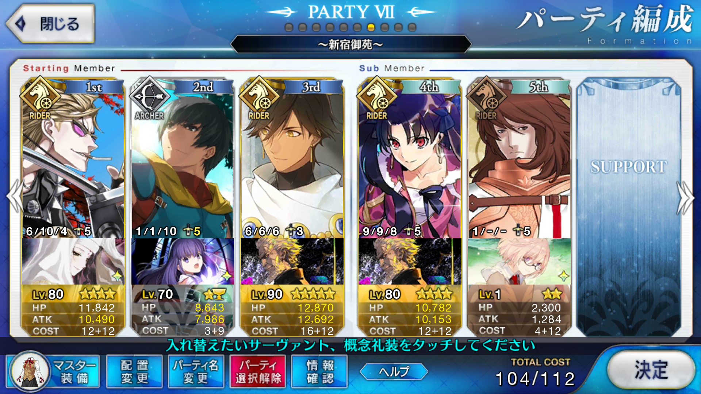

<!DOCTYPE HTML>
<html>
<head><meta name="generator" content="Hexo 3.9.0">
  <meta charset="utf-8">
  
  <title>【FGO】新宿 新宿御苑 蛮神の心臓集め 周回 | ぷらずま式改</title>
  <meta name="author" content="NPlasma">

  
  <meta name="description" content="NPlasmaの個人メモ">
  

  

  <meta name="viewport" content="width=device-width, initial-scale=1, maximum-scale=1">

  <meta property="og:title" content="【FGO】新宿 新宿御苑 蛮神の心臓集め 周回">
  <meta property="og:site_name" content="ぷらずま式改">

  
  

  
    <meta property="og:image" content="/img/ogp.png">
  

  <!-- ogp -->
  
    
      <meta name="description" content="この記事ではFGOフリークエストの周回を扱います。編成画像にて最終再臨絵のネタバレがあるのでご注意を">
<meta name="keywords" content="Fate,ゲーム,FGO,Fate&#x2F;GrandOrder,フリクエ周回">
<meta property="og:type" content="article">
<meta property="og:title" content="【FGO】新宿 新宿御苑 蛮神の心臓集め 周回">
<meta property="og:url" content="http://elleonard.github.io/nplus_doc/2018/02/05/game/fate/fgo/freequest/shinjuku-heart/index.html">
<meta property="og:site_name" content="ぷらずま式改">
<meta property="og:description" content="この記事ではFGOフリークエストの周回を扱います。編成画像にて最終再臨絵のネタバレがあるのでご注意を">
<meta property="og:locale" content="ja">
<meta property="og:image" content="http://elleonard.github.io/nplus_doc/2018/02/05/game/fate/fgo/freequest/shinjuku-heart/shinjuku-heart.png">
<meta property="og:updated_time" content="2019-09-13T04:56:39.358Z">
<meta name="twitter:card" content="summary">
<meta name="twitter:title" content="【FGO】新宿 新宿御苑 蛮神の心臓集め 周回">
<meta name="twitter:description" content="この記事ではFGOフリークエストの周回を扱います。編成画像にて最終再臨絵のネタバレがあるのでご注意を">
<meta name="twitter:image" content="http://elleonard.github.io/nplus_doc/2018/02/05/game/fate/fgo/freequest/shinjuku-heart/shinjuku-heart.png">
<meta name="twitter:creator" content="@elleonard_f">
    
    <meta name="twitter:image" content="http://elleonard.github.io/nplus_doc/img/ogp.png">
  

  <link rel="alternate" href="/nplus_doc/atom.xml" title="ぷらずま式改" type="application/atom+xml">
  <link rel="stylesheet" href="/nplus_doc/css/style.css" media="screen" type="text/css">
  <!--[if lt IE 9]><script src="//html5shiv.googlecode.com/svn/trunk/html5.js"></script><![endif]-->
  


  <link rel="apple-touch-icon" sizes="180x180" href="/nplus_doc/favicon/apple-touch-icon.png">
  <link rel="icon" type="image/png" sizes="32x32" href="/nplus_doc//favicon/favicon-32x32.png">
  <link rel="icon" type="image/png" sizes="16x16" href="/nplus_doc//favicon/favicon-16x16.png">
  <link rel="manifest" href="/nplus_doc//favicon/site.webmanifest">
  <link rel="mask-icon" href="/nplus_doc//favicon/safari-pinned-tab.svg" color="#5bbad5">
  <meta name="msapplication-TileColor" content="#da532c">
  <meta name="theme-color" content="#ffffff">
</head>
</html>

<body>
  <header id="header" class="inner"><div class="alignleft">
  <h1><a href="/nplus_doc/">ぷらずま式改</a></h1>
  <h2><a href="/nplus_doc/">NPlasma個人メモ</a></h2>
</div>
<nav id="main-nav" class="alignright">
  <ul>
    
      <li><a href="/">Home</a></li>
    
      <li><a href="/nplus_doc/2016/05/29/about/">About</a></li>
    
      <li><a href="https://twitter.com/elleonard_f">Twitter</a></li>
    
      <li><a href="https://github.com/elleonard">GitHub</a></li>
    
      <li><a href="/nplus_doc/2018/02/09/game/fate/fgo/fgo-link/">FGO</a></li>
    
  </ul>
  <div class="clearfix"></div>
</nav>
<div class="clearfix"></div></header>
  <div id="content" class="inner">
    <div id="main-col" class="alignleft"><div id="wrapper"><article class="post">
  
  <div class="post-content">
    <header>
      
        <div class="icon"></div>
        <time datetime="2018-02-05T03:47:38.000Z"><a href="/nplus_doc/2018/02/05/game/fate/fgo/freequest/shinjuku-heart/">2018-02-05</a></time>
      
      
  
    <h1 class="title">【FGO】新宿 新宿御苑 蛮神の心臓集め 周回</h1>
  

    </header>
    <div class="entry">
      
        <div id="toc" class="toc-article">
          <p class="toc-title">目次</p>
          <ol class="toc"><li class="toc-item toc-level-1"><a class="toc-link" href="#基本方針"><span class="toc-text">基本方針</span></a></li><li class="toc-item toc-level-1"><a class="toc-link" href="#ドロップアイテム"><span class="toc-text">ドロップアイテム</span></a></li><li class="toc-item toc-level-1"><a class="toc-link" href="#エネミー構成"><span class="toc-text">エネミー構成</span></a></li><li class="toc-item toc-level-1"><a class="toc-link" href="#編成"><span class="toc-text">編成</span></a></li><li class="toc-item toc-level-1"><a class="toc-link" href="#周回用キャラ選別"><span class="toc-text">周回用キャラ選別</span></a><ol class="toc-child"><li class="toc-item toc-level-2"><a class="toc-link" href="#NPチャージ持ちライダー"><span class="toc-text">NPチャージ持ちライダー</span></a></li><li class="toc-item toc-level-2"><a class="toc-link" href="#NPチャージ持ちアルターエゴ"><span class="toc-text">NPチャージ持ちアルターエゴ</span></a></li><li class="toc-item toc-level-2"><a class="toc-link" href="#NPチャージ持ちバーサーカー"><span class="toc-text">NPチャージ持ちバーサーカー</span></a></li></ol></li></ol>
        </div>
        <p>この記事ではFGOフリークエストの周回を扱います。<br>編成画像にて最終再臨絵のネタバレがあるのでご注意を</p>
<a id="more"></a>

<h1 id="基本方針"><a href="#基本方針" class="headerlink" title="基本方針"></a>基本方針</h1><ul>
<li>3T周回する</li>
</ul>
<h1 id="ドロップアイテム"><a href="#ドロップアイテム" class="headerlink" title="ドロップアイテム"></a>ドロップアイテム</h1><ul>
<li>蛮神の心臓</li>
<li>術の輝石</li>
<li>魔術髄液</li>
</ul>
<p>恒常で心臓を集められるクエストは今のところここが最高効率<br>足りなくなりがちな術の輝石が出るのも嬉しい</p>
<h1 id="エネミー構成"><a href="#エネミー構成" class="headerlink" title="エネミー構成"></a>エネミー構成</h1><ul>
<li>1w ヤクザx3（HP:2万程度）</li>
<li>2w ヤクザx2（HP:3万程度）</li>
<li>3w デーモンx1（HP:40万）</li>
</ul>
<h1 id="編成"><a href="#編成" class="headerlink" title="編成"></a>編成</h1><p></p>
<p>オーダーチェンジなし<br>オーダーチェンジを解禁すればもっと編成は柔軟にできる</p>
<p>1wは安定のステラ<br>2wはオジマンディアスでNPを配った後にイシュタルの宝具<br>3wはオジマンディアスと金時で宝具チェイン</p>
<p>金時はOCによる威力上昇倍率が大きいため、魔性菩薩を装備している<br>が、初期NPが30以上であればNP的には足りるため、エアリアルドライブや相撲も選択肢に入る<br>イシュタルは他の全体宝具ライダーで代用できるが、全体に持続するバフを配れるため最優候補はやはりイシュタル</p>
<h1 id="周回用キャラ選別"><a href="#周回用キャラ選別" class="headerlink" title="周回用キャラ選別"></a>周回用キャラ選別</h1><h2 id="NPチャージ持ちライダー"><a href="#NPチャージ持ちライダー" class="headerlink" title="NPチャージ持ちライダー"></a>NPチャージ持ちライダー</h2><p>星4ならアストルフォ、星3であればメドゥーサも悪くない<br>他のキャラのNPが工面できるのであれば、3w要員としてオジマンディアスの代用にケツァルコアトルを採用しても良い</p>
<h2 id="NPチャージ持ちアルターエゴ"><a href="#NPチャージ持ちアルターエゴ" class="headerlink" title="NPチャージ持ちアルターエゴ"></a>NPチャージ持ちアルターエゴ</h2><p>アルターエゴだが、自前でNPを20工面できるメカエリチャンは3wの宝具チェイン要員として採用できる<br>殺生院キアラは宝具威力こそ強くないものの、1w2wなら問題なく吹き飛ばせる<br>3w用に防御デバフを持っているのも良い</p>
<h2 id="NPチャージ持ちバーサーカー"><a href="#NPチャージ持ちバーサーカー" class="headerlink" title="NPチャージ持ちバーサーカー"></a>NPチャージ持ちバーサーカー</h2><p>1w2w要員としてスパルタクスも採用圏内<br>居座り続ける必要はあるが、3w要員としてエルドラドのバーサーカーも検討できる</p>

      
    </div>
    
    <footer>
        <div class="alignright">
            <a href="https://twitter.com/share?ref_src=twsrc%5Etfw" class="twitter-share-button" data-text="【FGO】新宿 新宿御苑 蛮神の心臓集め 周回 | ぷらずま式改" data-url="http://elleonard.github.io/nplus_doc/2018/02/05/game/fate/fgo/freequest/shinjuku-heart/" data-via="elleonard_f" data-show-count="false">Tweet</a><script async src="https://platform.twitter.com/widgets.js" charset="utf-8"></script>
        </div>
        
  
  <div class="categories">
    <a href="/nplus_doc/categories/FGO/">FGO</a>
  </div>

        
  
  <div class="tags">
    <a href="/nplus_doc/tags/Fate/">Fate</a>, <a href="/nplus_doc/tags/ゲーム/">ゲーム</a>, <a href="/nplus_doc/tags/FGO/">FGO</a>, <a href="/nplus_doc/tags/Fate-GrandOrder/">Fate/GrandOrder</a>, <a href="/nplus_doc/tags/フリクエ周回/">フリクエ周回</a>
  </div>

        
          <div class="article-prev">
              <a href="/nplus_doc/2018/02/06/engineering/windows10-inaccessible-boot-device/">Windows10がINACCESSIBLE BOOT DEVICEで起動しない <span class="prev-arrow"/></a>
            </div>
        
        
          <div class="article-next">
            <a href="/nplus_doc/2018/02/05/game/fate/fgo/chocolate-garden/black-to-0208/">【FGO】繁栄のチョコレートガーデンズ・オブ・バレンタイン ブラック級（2/8まで） <span class="next-arrow"/></a>
          </div>
        
        <!-- partial('post/share') -->
      <div class="clearfix"></div>
    </footer>
  </div>
</article>


</div></div>
    <aside id="sidebar" class="alignright">
  <div class="search">
  <form action="//google.com/search" method="get" accept-charset="utf-8">
    <input type="search" name="q" results="0" placeholder="検索">
    <input type="hidden" name="q" value="site:elleonard.github.io/nplus_doc">
  </form>
</div>

  
<div class="widget tag">
  <h3 class="title">カテゴリ</h3>
  <ul class="entry">
  
    <li><a href="/nplus_doc/categories/FGO/">FGO</a><small>47</small></li>
  
    <li><a href="/nplus_doc/categories/niconico/">niconico</a><small>3</small></li>
  
    <li><a href="/nplus_doc/categories/アニメ感想/">アニメ感想</a><small>10</small></li>
  
    <li><a href="/nplus_doc/categories/ゲーム/">ゲーム</a><small>48</small></li>
  
    <li><a href="/nplus_doc/categories/ゲーム/ゲームレビュー/">ゲームレビュー</a><small>37</small></li>
  
    <li><a href="/nplus_doc/categories/ゲーム制作/">ゲーム制作</a><small>8</small></li>
  
    <li><a href="/nplus_doc/categories/遊戯王ブロンティーズ/デッキレシピ/">デッキレシピ</a><small>4</small></li>
  
    <li><a href="/nplus_doc/categories/小説/">小説</a><small>4</small></li>
  
    <li><a href="/nplus_doc/categories/情報技術/">情報技術</a><small>11</small></li>
  
    <li><a href="/nplus_doc/categories/漫画/">漫画</a><small>2</small></li>
  
    <li><a href="/nplus_doc/categories/百合/">百合</a><small>6</small></li>
  
    <li><a href="/nplus_doc/categories/艦これ/">艦これ</a><small>76</small></li>
  
    <li><a href="/nplus_doc/categories/遊戯王ブロンティーズ/">遊戯王ブロンティーズ</a><small>4</small></li>
  
    <li><a href="/nplus_doc/categories/雑記/">雑記</a><small>4</small></li>
  
  </ul>
</div>


  
<div class="widget tag">
  <h3 class="title">最近の投稿</h3>
  <ul class="entry">
    
      <li>
        <a href="/nplus_doc/2020/03/30/game/atelier/rorona-dx/">【ゲーム感想】ロロナのアトリエ ～アーランドの錬金術士～ DX</a>
      </li>
    
      <li>
        <a href="/nplus_doc/2020/03/13/anime/girls-und-panzer/">【アニメ感想】ガールズ＆パンツァー TVシリーズ アンツィオ戦 劇場版</a>
      </li>
    
      <li>
        <a href="/nplus_doc/2020/03/07/engineering/rmmv/good-plugin2/">RPGツクールMV 続・良いプラグインとは</a>
      </li>
    
      <li>
        <a href="/nplus_doc/2020/02/21/novel/dear-all-of-you/">【ラノベ感想】じんるいのみなさまへ -わたしたちの場所-</a>
      </li>
    
      <li>
        <a href="/nplus_doc/2020/02/20/game/dear-all-of-you/">【ゲーム感想】じんるいのみなさまへ</a>
      </li>
    
  </ul>
</div>


  
<div class="widget tag">
  <h3 class="title">Link</h3>
  <ul class="entry">
    
      <li>
        <a href="https://www.nicovideo.jp/">niconico</a>
      </li>
    
      <li>
        <a href="http://lovingtheflags1986.blog96.fc2.com/">国旗と酒が待ち遠しいドリル日記</a>
      </li>
    
  </ul>
</div>


</aside>
    
    <div class="clearfix"></div>
  </div>
  <footer id="footer" class="inner"><div class="alignleft">
  <p>
  
  &copy; 2020 NPlasma
  
  All rights reserved.</p>
  <p>Powered by <a href="http://hexo.io/" target="_blank">Hexo</a></p>
</div>
<div class="clearfix"></div>
</footer>
  <script src="/nplus_doc/js/jquery.imagesloaded.min.js"></script>
<script src="/nplus_doc/js/gallery.js"></script>


<link rel="stylesheet" href="/nplus_doc/fancybox/jquery.fancybox.css" media="screen" type="text/css">
<script src="/nplus_doc/fancybox/jquery.fancybox.pack.js"></script>
<script type="text/javascript">
(function($){
  $('.fancybox').fancybox();
})(jQuery);
</script>


<div id='bg'></div>
</body>
</html>
